1

This page was created to suppor the re-annotation work carried out on the AMI corpus presented in this paper The AMI corpus contains a number of audio events labelled as "cough" by the annotation team, for example.
Although, a large portion of these events can clearly be considered coughs (aspiration before expiration), a more substantial number of these events are more inline with thoat clearing sounds.
Using this webpage, audio files can be previewed from tabletop array recordings and headset recordings once. 1369 files are available for previewing and a specific file can be accessed using the "jump to" button below by entering a file number in the field. Associated annotations (which can be found here) will also show when a file is selected.
| File Number | Meeting ID | Start time | End time | Cough (1/0) | Volume | Type | Audio preview (Room mic) | |
|---|---|---|---|---|---|---|---|---|
| 2 | EN2001a | 3134.138 | 3134.607 | 1 | medium | chesty | 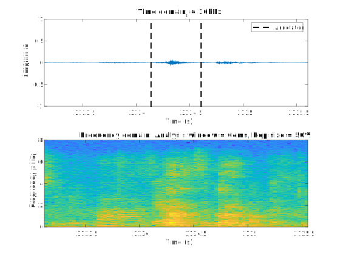 | |
| 3 | EN2001a | 3134.692 | 3135.171 | 1 | medium | chesty | 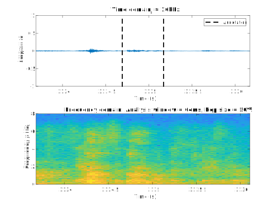 | |
| 38 | EN2001a | 4418.169 | 4418.731 | 1 | medium | volley | 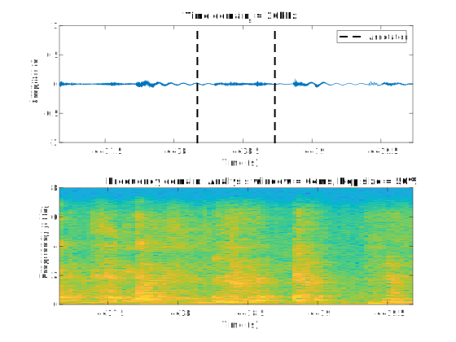 | |
| 39 | EN2001a | 4418.814 | 4419.133 | 1 | medium | volley | 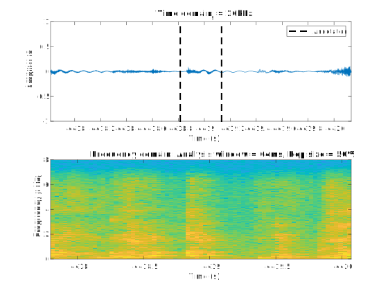 | |
| 40 | EN2001a | 4420.833 | 4421.139 | 1 | loud | throaty | 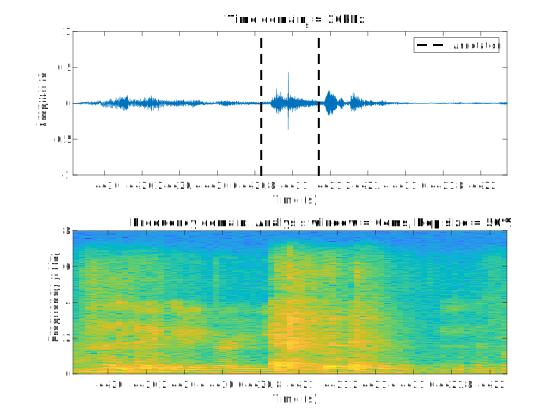 | |
| 41 | EN2001a | 4418.793 | 4419.157 | 1 | medium | volley | 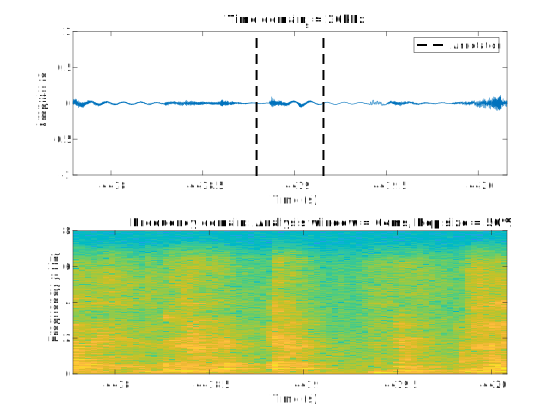 | |
| 42 | EN2001a | 4420.86 | 4421.234 | 1 | loud | volley | 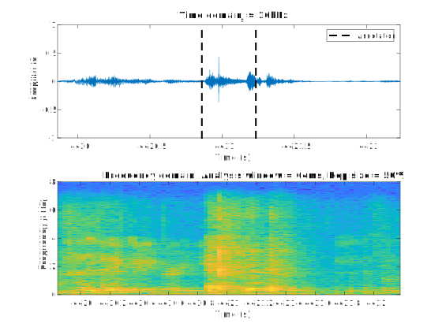 | |
| 43 | EN2001a | 4421.281 | 4421.549 | 1 | loud | volley | 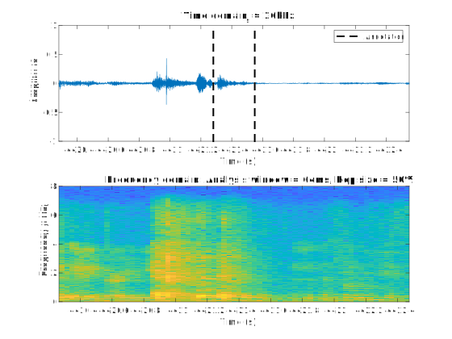 | |
| 52 | EN2001a | 1424.594 | 1425.177 | 1 | loud | dry | 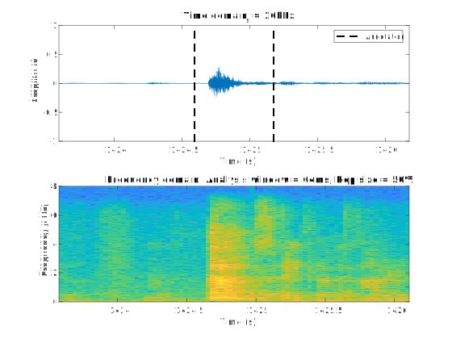 | |
| 53 | EN2001a | 2085.329 | 2085.864 | 1 | loud | dry | 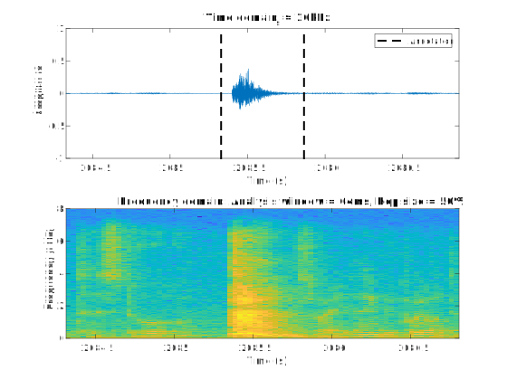 | |
| 54 | EN2001a | 2455.686 | 2456.22 | 1 | loud | dry | 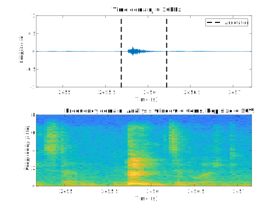 | |
| 55 | EN2001a | 5066.54 | 5067.004 | 1 | medium | wheeze | 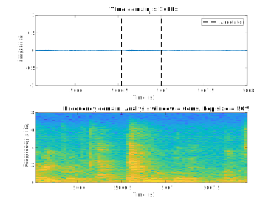 | |
| 56 | EN2001a | 5071.777 | 5072.395 | 1 | medium | dry | 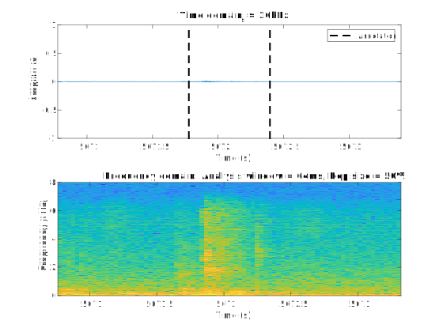 | |
| 58 | EN2001d | 148.391 | 148.699 | 1 | medium | muffled | 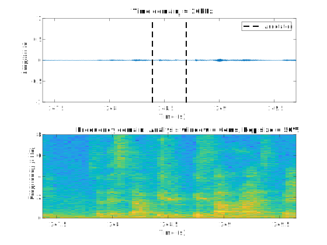 | |
| 59 | EN2001d | 148.73 | 149.048 | 1 | medium | muffled | 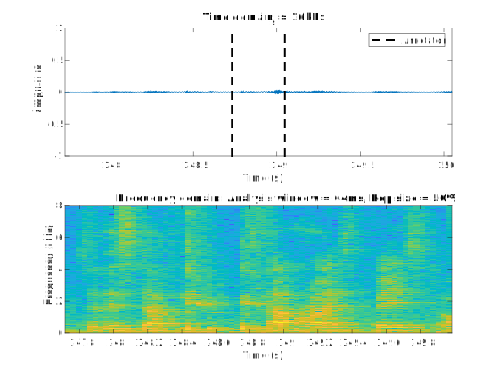 | |
| 61 | EN2001d | 1253.868 | 1254.651 | 1 | medium | dry | 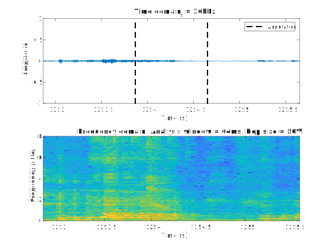 | |
| 62 | EN2001d | 2358.769 | 2359.417 | 1 | medium | dry | 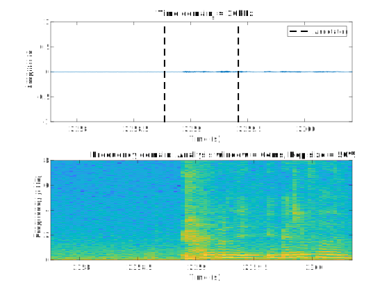 | |
| 63 | EN2001d | 3182.946 | 3183.453 | 1 | medium | dry | 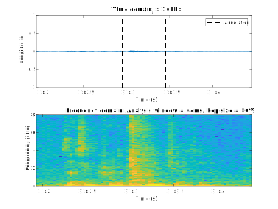 | |
| 74 | EN2001e | 2222.884 | 2223.252 | 1 | quiet | dry | 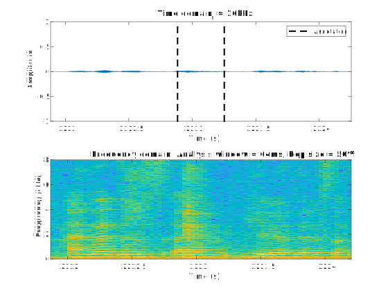 | |
| 91 | EN2001e | 860.332 | 861.034 | 1 | loud | dry | 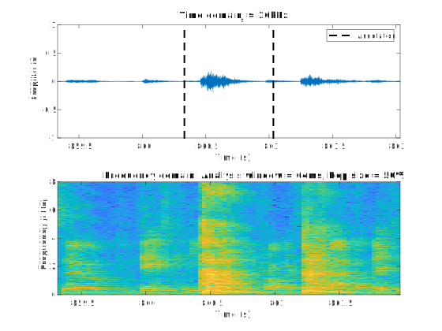 | |
| 92 | EN2001e | 861.197 | 861.787 | 1 | loud | dry | 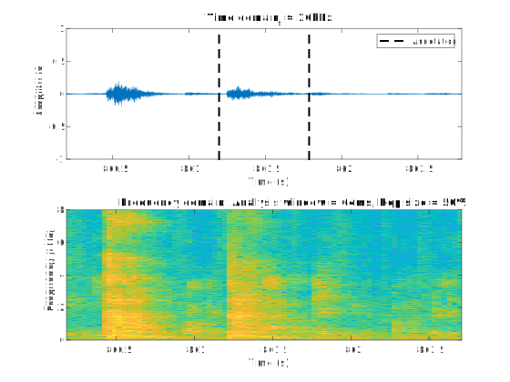 | |
| 104 | EN2001e | 195.899 | 196.65 | 1 | loud | chesty | 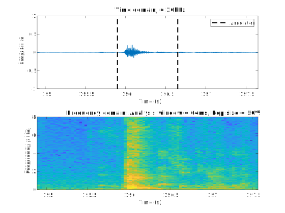 | |
| 105 | EN2002a | 1012.849 | 1013.425 | 1 | medium | 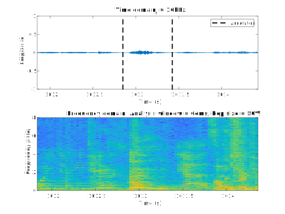 | ||
| 133 | EN2002d | 455.952 | 456.608 | 1 | loud | dry | 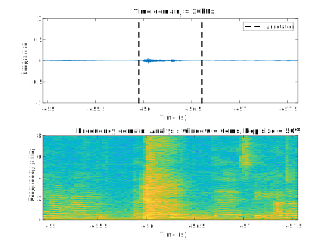 | |
| 169 | EN2003a | 1635.856 | 1636.366 | 1 | loud | dry | 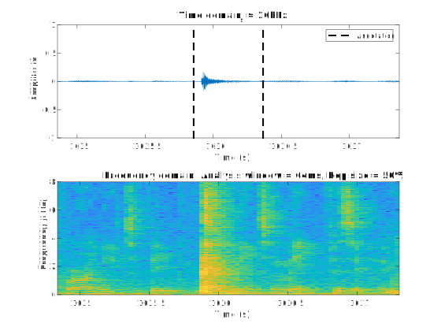 | |
| 171 | EN2004a | 145.32 | 145.632 | 1 | medium | dry | 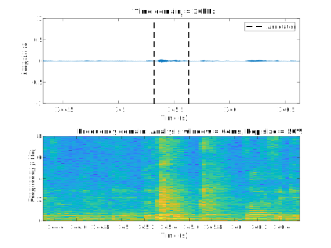 | |
| 172 | EN2004a | 145.231 | 145.995 | 1 | medium | dry | 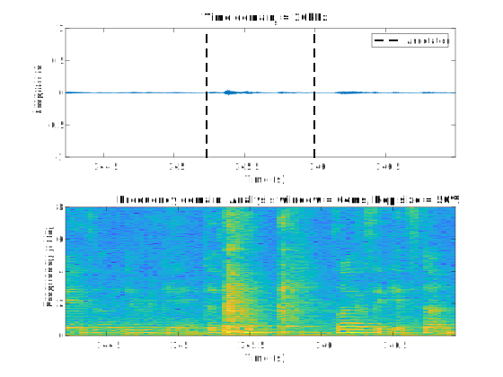 | |
| 209 | EN2005a | 3158.824 | 3159.192 | 1 | loud | dry | 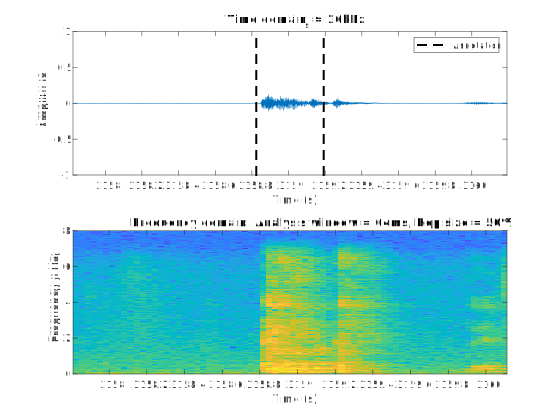 | |
| 210 | EN2005a | 3159.226 | 3159.523 | 1 | loud | dry |  |
|
| 214 | EN2006a | 17.452 | 18.065 | 1 | medium | weak | 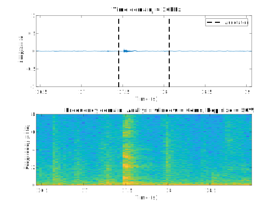 | |
| 215 | EN2006a | 73.624 | 73.977 | 1 | loud | short | 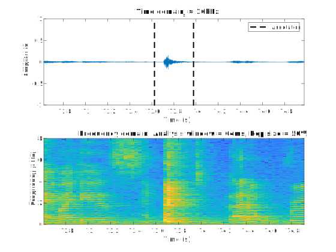 | |
| 222 | EN2006a | 664.374 | 665.035 | 1 | medium | dry | 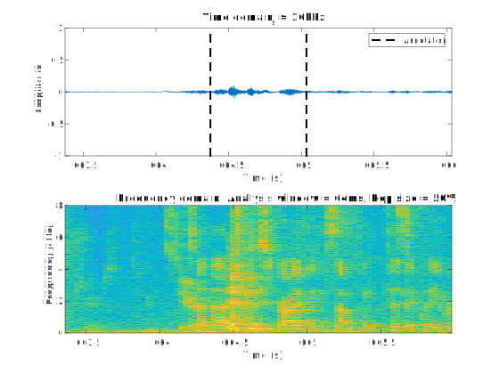 | |
| 223 | EN2006a | 730.943 | 731.714 | 1 | loud | dry | 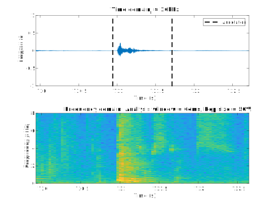 | |
| 224 | EN2006a | 953.726 | 954.074 | 1 | medium | dry | 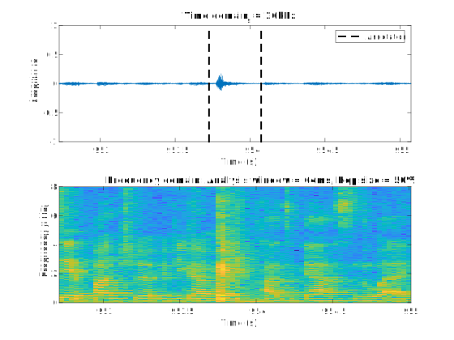 | |
| 227 | EN2006a | 1096.709 | 1097.181 | 1 | loud | short | 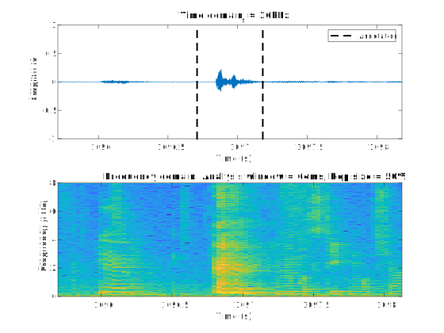 | |
| 244 | EN2006a | 2845.951 | 2846.958 | 1 | quiet | weak | 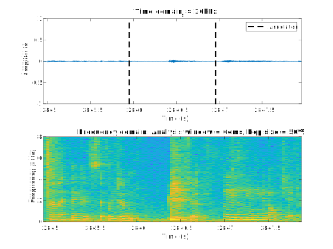 | |
| 258 | EN2006b | 169.913 | 170.631 | 1 | loud | dry | 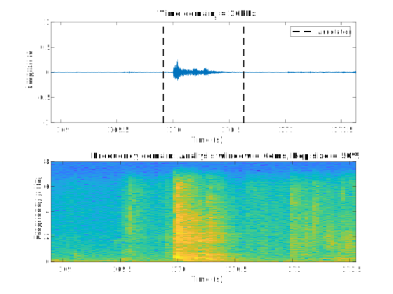 | |
| 262 | EN2006b | 664.787 | 665.474 | 1 | loud | dry | 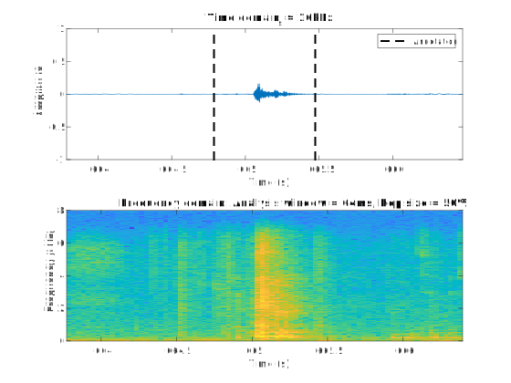 | |
| 263 | EN2006b | 756.26 | 757.003 | 1 | medium | dry | 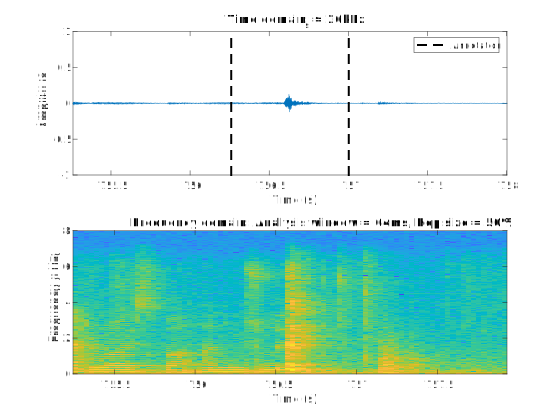 | |
| 264 | EN2006b | 840.034 | 840.798 | 1 | loud | dry | 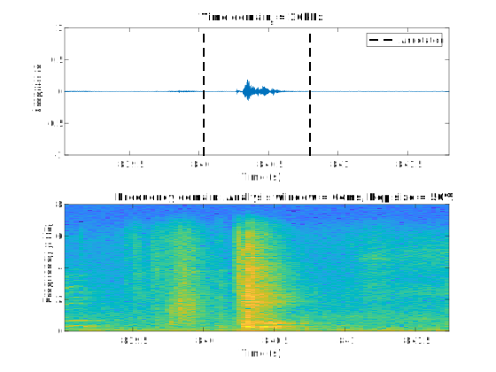 | |
| 265 | EN2006b | 1156.279 | 1157.169 | 1 | loud | dry | 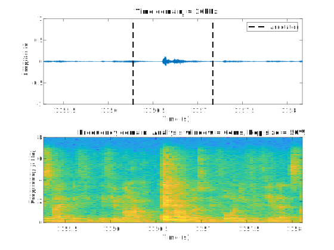 | |
| 266 | EN2006b | 1251.655 | 1252.441 | 1 | loud | dry | 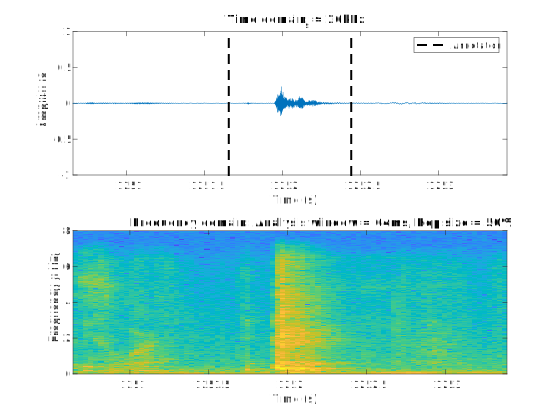 | |
| 268 | EN2006b | 1439.155 | 1439.628 | 1 | loud | dry | 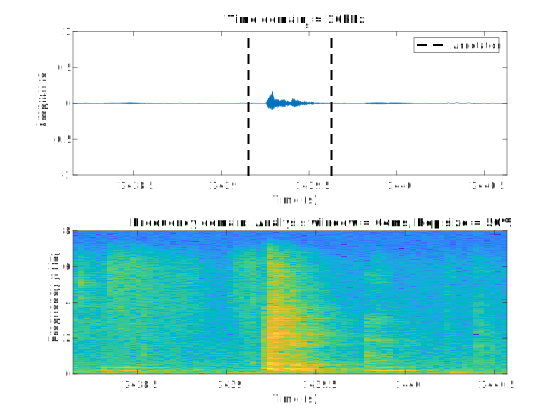 | |
| 270 | EN2006b | 1667.424 | 1668.432 | 1 | quiet | weak | 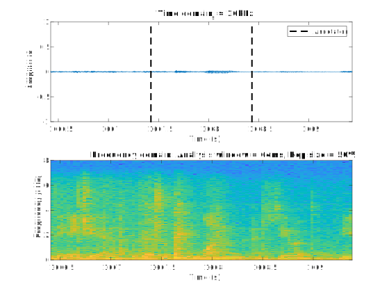 | |
| 271 | EN2006b | 1704.04 | 1704.853 | 1 | loud | dry | 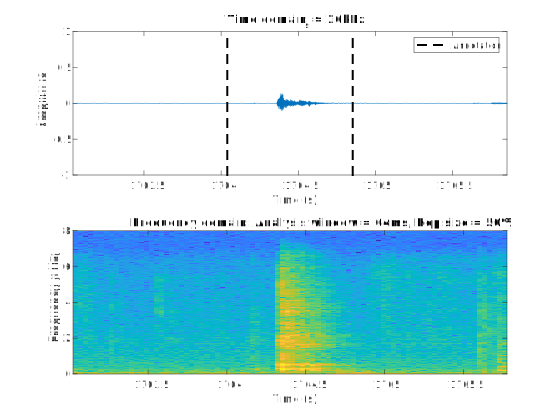 | |
| 273 | EN2006b | 1951.962 | 1952.858 | 1 | loud | dry | 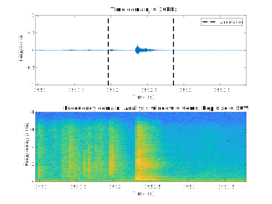 | |
| 278 | EN2006b | 2286.67 | 2287.226 | 1 | medium | dry | 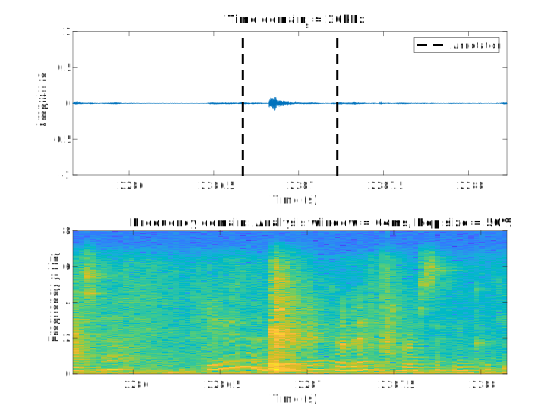 | |
| 279 | EN2006b | 2393.12 | 2394.061 | 1 | medium | dry | 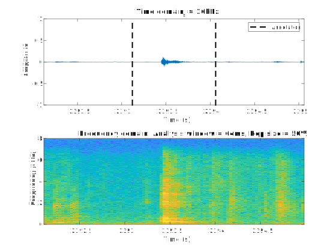 | |
| 280 | EN2006b | 2563.06 | 2563.474 | 1 | quiet | weak |  |
|
| 282 | EN2006b | 2834.51 | 2835.191 | 1 | medium | dry |  |
|
| 283 | EN2006b | 2906.272 | 2907.203 | 1 | loud | double | 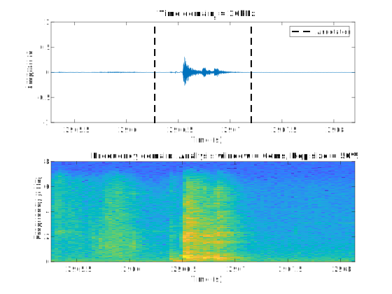 | |
| 286 | EN2009c | 1790.637 | 1791.034 | 1 | medium | wheeze | 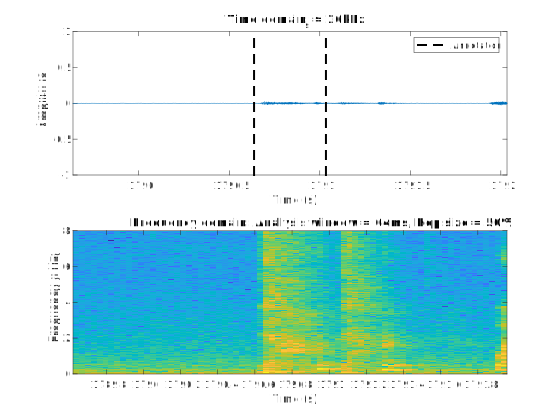 | |
| 287 | EN2009c | 1791.074 | 1791.424 | 1 | medium | wheeze | 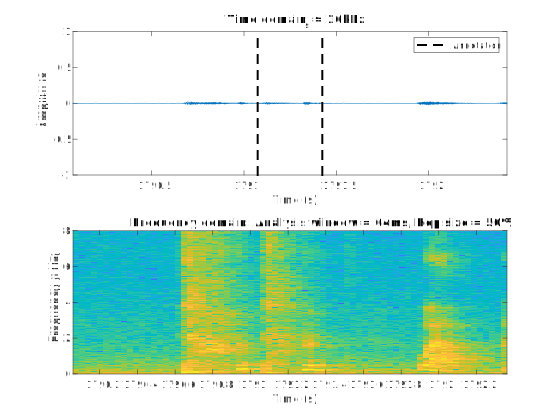 | |
| 288 | ES2002a | 436.336 | 437.264 | 1 | loud | wet | ||
| 289 | ES2002a | 701.114 | 701.555 | 1 | loud | chesty | ||
| 290 | ES2002a | 701.622 | 702.049 | 1 | loud | chesty | ||
| 293 | ES2002a | 1104.626 | 1105.186 | 1 | loud | chesty | ||
| 294 | ES2002a | 1105.211 | 1105.736 | 1 | loud | chesty | ||
| 296 | ES2002b | 454.92 | 455.475 | 1 | medium | dry |  |
|
| 303 | ES2002b | 1724.439 | 1725.003 | 1 | loud | dry | ||
| 304 | ES2002b | 1864.411 | 1865.077 | 1 | medium | dry | ||
| 325 | ES2002d | 256.875 | 257.257 | 1 | loud | dry | ||
| 327 | ES2002d | 1679.531 | 1679.885 | 1 | loud | double | ||
| 328 | ES2002d | 1692.513 | 1692.967 | 1 | medium | dry | ||
| 329 | ES2002d | 1693.147 | 1693.474 | 1 | medium | dry | ||
| 330 | ES2002d | 1693.685 | 1694.054 | 1 | medium | dry | ||
| 343 | ES2003b | 1658.601 | 1659.118 | 1 | loud | dry | ||
| 344 | ES2003b | 1659.175 | 1659.478 | 1 | loud | dry | ||
| 346 | ES2003c | 141.581 | 142.157 | 1 | medium | dry | ||
| 347 | ES2003c | 1427.366 | 1427.602 | 1 | medium | dry | ||
| 348 | ES2003c | 1427.675 | 1428.155 | 1 | medium | dry | ||
| 353 | ES2003d | 2179.28 | 2180.224 | 1 | medium | chesty | ||
| 359 | ES2004c | 2114.004 | 2114.555 | 1 | loud | dry | ||
| 360 | ES2004c | 474.45 | 474.983 | 1 | loud | dry | ||
| 361 | ES2004c | 475.046 | 475.471 | 1 | loud | dry |  |
|
| 364 | ES2004d | 971.602 | 972.206 | 1 | loud | dry | ||
| 365 | ES2004d | 2064.495 | 2065.035 | 1 | loud | dry | ||
| 366 | ES2004d | 2065.045 | 2065.384 | 1 | loud | dry | ||
| 367 | ES2005b | 32.266 | 32.724 | 1 | medium | dry | ||
| 368 | ES2005b | 136.362 | 137.001 | 1 | medium | dry | ||
| 375 | ES2005b | 1328.493 | 1329.083 | 1 | medium | wet | ||
| 403 | ES2005d | 921.664 | 921.984 | 1 | medium | dry | ||
| 404 | ES2005d | 61.869 | 62.32 | 1 | loud | dry | ||
| 417 | ES2006d | 718.432 | 718.961 | 1 | medium | dry | ||
| 419 | ES2007a | 154.073 | 155.112 | 1 | medium | breathy | ||
| 420 | ES2007a | 237.589 | 238.105 | 1 | loud | wet |  |
|
| 422 | ES2007a | 485.899 | 486.302 | 1 | loud | phlegmy | ||
| 426 | ES2007b | 331.559 | 331.979 | 1 | loud | dry | ||
| 432 | ES2007c | 178.592 | 179.408 | 1 | loud | dry | ||
| 445 | ES2007c | 1717.114 | 1717.596 | 1 | loud | dry | ||
| 447 | ES2007d | 120.69 | 121.176 | 1 | loud | dry | ||
| 448 | ES2007d | 121.247 | 121.671 | 1 | medium | dry | ||
| 450 | ES2008a | 160.688 | 161.255 | 1 | quiet | dry | ||
| 452 | ES2008b | 1097.823 | 1098.163 | 1 | loud | dry | ||
| 453 | ES2008b | 1098.186 | 1098.44 | 1 | loud | dry | ||
| 454 | ES2008b | 531.334 | 532.276 | 1 | loud | dry | ||
| 455 | ES2008b | 643.809 | 644.145 | 1 | loud | dry | ||
| 456 | ES2008b | 644.178 | 644.625 | 1 | loud | dry | ||
| 457 | ES2008b | 982.64 | 983.36 | 1 | loud | dry | ||
| 458 | ES2008b | 1117.92 | 1118.4 | 1 | loud | dry | ||
| 459 | ES2008b | 1233.992 | 1234.354 | 1 | loud | dry | ||
| 460 | ES2008b | 1234.38 | 1234.896 | 1 | loud | dry | ||
| 461 | ES2008b | 1463.92 | 1464.336 | 1 | loud | dry | ||
| 486 | ES2009d | 1901.703 | 1902.05 | 1 | loud | dry | ||
| 487 | ES2009d | 1902.084 | 1902.415 | 1 | medium | dry | ||
| 539 | ES2012b | 405.999 | 406.874 | 1 | medium | dry | ||
| 555 | ES2012b | 1895.098 | 1895.547 | 1 | medium | muffled | ||
| 559 | ES2013a | 638.32 | 639.058 | 1 | medium | chesty | ||
| 563 | ES2013c | 803.866 | 804.477 | 1 | loud | dry | ||
| 565 | ES2013c | 1071.23 | 1071.751 | 1 | loud | breathy | ||
| 567 | ES2013c | 1263.136 | 1263.568 | 1 | loud | dry | ||
| 568 | ES2013c | 1292.915 | 1293.696 | 1 | loud | dry | ||
| 569 | ES2013c | 1314.478 | 1315.147 | 1 | loud | dry | ||
| 571 | ES2013c | 1599.932 | 1600.387 | 1 | loud | dry | ||
| 572 | ES2013c | 1957.006 | 1957.601 | 1 | loud | dry | ||
| 573 | ES2013c | 2126.945 | 2127.792 | 1 | loud | dry | ||
| 576 | ES2013c | 1365.636 | 1365.934 | 1 | medium | dry | ||
| 578 | ES2013d | 467.167 | 467.653 | 1 | loud | long | ||
| 579 | ES2013d | 467.671 | 467.925 | 1 | loud | dry | ||
| 580 | ES2013d | 9.528 | 10.157 | 1 | loud | chesty | ||
| 593 | ES2014c | 253.379 | 253.653 | 1 | loud | dry | ||
| 594 | ES2014c | 253.678 | 253.943 | 1 | loud | dry |  |
|
| 595 | ES2014c | 152.961 | 153.691 | 1 | loud | dry | ||
| 600 | ES2014c | 1491.808 | 1492.16 | 1 | medium | dry | ||
| 604 | ES2014d | 822.651 | 823.243 | 1 | medium | dry | ||
| 635 | ES2015d | 1234.434 | 1235.344 | 1 | loud | dry | ||
| 638 | ES2015d | 1066.095 | 1066.687 | 1 | medium | dry | ||
| 657 | ES2016b | 613.467 | 614.13 | 1 | medium | dry | ||
| 658 | ES2016b | 651.972 | 652.687 | 1 | medium | dry | ||
| 660 | ES2016b | 1988.817 | 1989.592 | 1 | medium | dry | ||
| 667 | ES2016c | 617.619 | 618.227 | 1 | loud | dry | ||
| 668 | ES2016c | 1144.34 | 1145.244 | 1 | medium | dry | ||
| 669 | ES2016c | 1931.134 | 1931.484 | 1 | medium | short | ||
| 670 | ES2016c | 1974.936 | 1975.398 | 1 | loud | wheeze | ||
| 671 | ES2016d | 1388.681 | 1389.247 | 1 | quiet | dry | ||
| 674 | ES2016d | 759.872 | 760.435 | 1 | quiet | wheeze | ||
| 677 | ES2016d | 183.957 | 184.324 | 1 | medium | breathy | ||
| 678 | ES2016d | 938.049 | 938.688 | 1 | loud | dry | ||
| 679 | ES2016d | 1228.008 | 1228.442 | 1 | loud | dry | ||
| 689 | IB4004 | 218.032 | 218.398 | 1 | medium | dry | ||
| 690 | IB4004 | 240.368 | 240.624 | 1 | medium | dry |  |
|
| 691 | IB4004 | 363.551 | 363.941 | 1 | quiet | dry | ||
| 692 | IB4004 | 467.476 | 467.923 | 1 | quiet | dry | ||
| 693 | IB4004 | 551.961 | 552.435 | 1 | quiet | dry | ||
| 694 | IB4004 | 587.34 | 587.754 | 1 | quiet | dry | ||
| 695 | IB4004 | 932.48 | 932.72 | 1 | quiet | dry | ||
| 696 | IB4004 | 1170.083 | 1170.624 | 1 | medium | dry | ||
| 697 | IB4004 | 1346.003 | 1346.721 | 1 | quiet | dry |  |
|
| 698 | IB4004 | 1439.344 | 1439.584 | 1 | medium | dry | ||
| 699 | IB4004 | 1662.8 | 1663.48 | 1 | medium | dry | ||
| 700 | IB4004 | 1752.495 | 1753 | 1 | quiet | dry | ||
| 701 | IB4004 | 1820.507 | 1821.007 | 1 | medium | dry | ||
| 702 | IB4004 | 2221.771 | 2222.155 | 1 | medium | dry | ||
| 735 | IN1002 | 44.207 | 44.995 | 1 | medium | dry | ||
| 736 | IN1002 | 75.069 | 75.604 | 1 | medium | muffled | ||
| 738 | IN1002 | 558.672 | 558.992 | 1 | medium | muffled | ||
| 760 | IN1008 | 148.271 | 149.039 | 1 | loud | dry | ||
| 761 | IN1012 | 79.246 | 79.907 | 1 | medium | dry | ||
| 766 | IN1012 | 573.822 | 574.077 | 1 | quiet | weak | ||
| 768 | IN1012 | 1960.193 | 1960.71 | 1 | loud | dry | ||
| 769 | IN1012 | 1960.725 | 1961.43 | 1 | quiet | dry | ||
| 771 | IN1012 | 212.532 | 213.229 | 1 | medium | breathy | ||
| 773 | IN1012 | 699.141 | 699.418 | 1 | quiet | dry | ||
| 774 | IN1012 | 699.514 | 699.893 | 1 | quiet | dry |  |
|
| 776 | IN1012 | 702.68 | 703.113 | 1 | medium | chesty |  |
|
| 777 | IN1012 | 703.193 | 703.51 | 1 | quiet | chesty | ||
| 778 | IN1012 | 810.773 | 811.697 | 1 | medium | dry | ||
| 788 | IS1000a | 92.271 | 92.516 | 1 | loud | dry | ||
| 789 | IS1000a | 92.507 | 92.786 | 1 | loud | dry | ||
| 795 | IS1000b | 1034.546 | 1034.865 | 1 | medium | dry | ||
| 796 | IS1000b | 1034.906 | 1035.163 | 1 | medium | dry | ||
| 806 | IS1000d | 59.479 | 59.913 | 1 | loud | dry | ||
| 807 | IS1000d | 59.936 | 60.163 | 1 | loud | dry | ||
| 808 | IS1000d | 153.019 | 153.418 | 1 | loud | dry | ||
| 809 | IS1000d | 153.434 | 153.619 | 1 | loud | dry | ||
| 820 | IS1001a | 199.936 | 200.419 | 1 | loud | dry | ||
| 821 | IS1001a | 200.465 | 200.793 | 1 | medium | weak | ||
| 910 | IS1004b | 296.656 | 297.648 | 1 | loud | dry | ||
| 928 | IS1004c | 109.75 | 110.48 | 1 | quiet | dry |  |
|
| 953 | IS1004d | 1785.16 | 1785.396 | 1 | quiet | dry | ||
| 956 | IS1004d | 700.001 | 700.296 | 1 | medium | dry | ||
| 958 | IS1005b | 17.809 | 18.436 | 1 | medium | breathy | ||
| 1016 | IS1006d | 505.967 | 506.462 | 1 | medium | dry | ||
| 1069 | IS1007d | 308.481 | 309.158 | 1 | medium | throat clear | ||
| 1075 | IS1007d | 864.815 | 865.176 | 1 | medium | weak | ||
| 1148 | IS1009b | 320.594 | 321.142 | 1 | medium | dry | ||
| 1149 | IS1009b | 362.968 | 363.365 | 1 | medium | dry | ||
| 1183 | TS3003d | 1949.073 | 1949.737 | 1 | medium | dry |